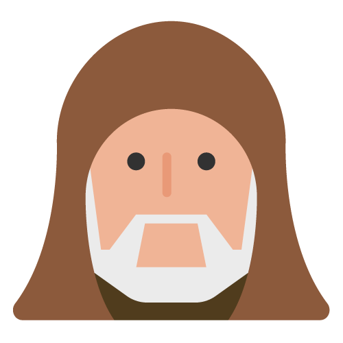

ΙΑΣΩΝ ΖΙΩΓΑΣ P3180057
Ονομάζομαι Ιάσων Ζιώγας, είμαι 22 χρονών και φοιτώ στο Οικονομικό Πανεπιστήμιο Αθηνών. Βρίσκομαι στο 7ο εξάμηνο των σπουδών μου στον κλάδο της πληροφορικής και η συγκεκριμένη ιστοσελίδα αποτελεί μέρος της εργασίας που έχουμε για το μάθημα των Τεχνολογιών και Προγραμματισμός Εφαρμογών στον Ιστό. Στον ελεύθερο μου χρόνο ασχολούμαι με τον αθλητισμό , κυρίως με το μπάσκετ και την γυμναστική ενω επίσης ειμαι μεγάλος φαν των ταινιών επιστημονικής φαντασίας. Στό μέλλον θα ήθελα να ασχολήθω κυρίως με την ασφάλεια δικτύων και με την διαχείριση βάσεων δεδομένων.